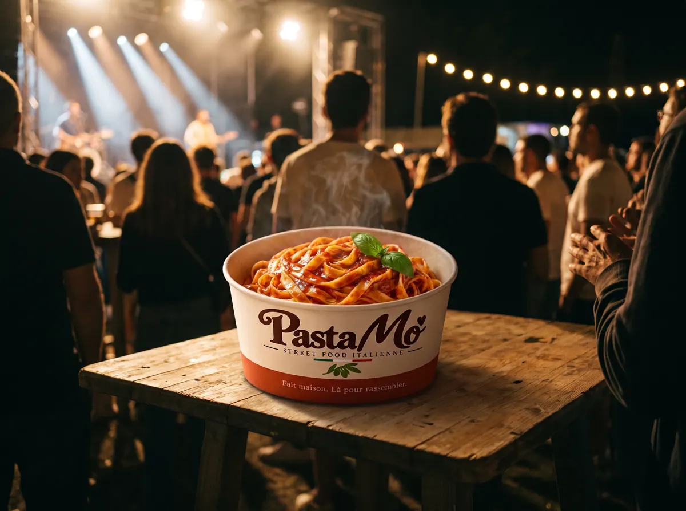
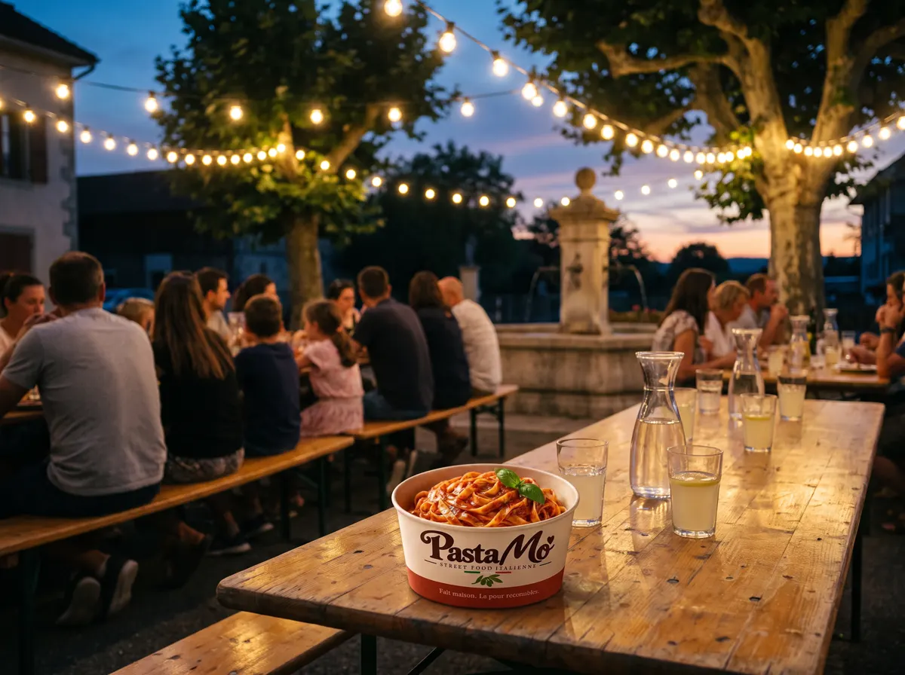

Festivals · Open airs · Marchés
Des pâtes fraîches jusqu'au dernier concert.
Un stand autonome de street food italienne pour vos festivals, marchés et fêtes communales. Une box qui se mange debout, à une main, chaude et vite servie.
Pensé pour la foule.
Une file qui avance
Trois sauces, un choix rapide, une box prête en quelques gestes. On dimensionne le nombre de postes avec vous selon la fréquentation.
Un stand autonome
On arrive avec notre matériel. On fait le point avant sur l'emplacement, l'électricité et l'eau.
Une carte qui plaît à tous
Bolognese généreuse, Pesto Verde végétarien, Pomodoro sans piquant pour les enfants.

Où on s'installe
Du marché de quartier au grand open air.
- Festivals de musique et open airs
- Marchés et marchés de Noël
- Fêtes communales et de quartier
- Événements sportifs grand public
Vous préparez la sélection des stands ? Nous envoyons sur demande notre présentation : stand, carte et besoins techniques.
Ce qu'on sert
Trois sauces maison, une box.
Des pâtes fraîches d'un artisan genevois, et trois recettes de famille préparées par Morgane.


Questions fréquentes
Dans quelle région intervenez-vous ?
À Genève et dans tout le canton. Pour le canton de Vaud et le reste de la Suisse romande, écrivez-nous : nous étudions chaque festival.
De quoi avez-vous besoin sur place ?
D'un emplacement pour le stand. On fait le point avec vous avant l'événement sur l'électricité et l'eau.
Pouvez-vous servir une grande affluence ?
Oui : on dimensionne le nombre de postes avec vous selon la fréquentation attendue.
Pouvez-vous nous envoyer un dossier de candidature ?
Oui, nous envoyons sur demande une présentation du stand, de la carte et de nos besoins techniques.
Avez-vous des options végétariennes ?
Oui : le Pesto Verde et la Pomodoro sont végétariens. Nos pâtes fraîches contiennent des œufs, nous ne proposons donc pas d'option vegan.
Quand pouvez-vous intervenir ?
Nos premiers événements sont prévus dès début 2027. Nous préparons déjà le calendrier : écrivez-nous dès que votre date est connue.
Une place pour nous dans votre programme ?
Dites-nous le nom de l'événement, les dates et la fréquentation attendue. On vous envoie notre présentation.
Ou par téléphone : 078 213 38 68